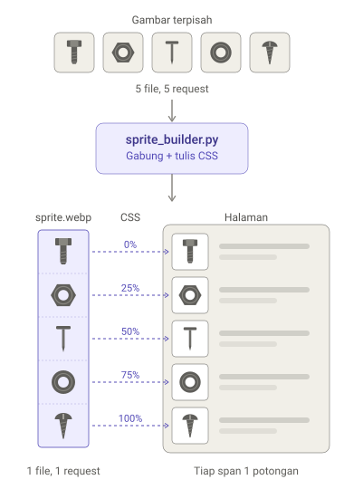
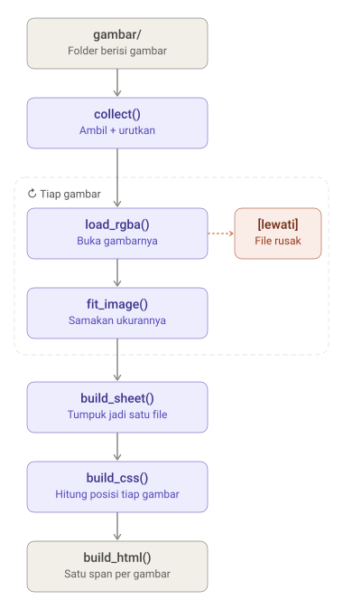

Wes Bos pernah membedah kenapa situs McMaster-Carr itu bisa secepat itu. Triknya banyak, dan ada satu yang bikin aku pengen niru sendiri, yaitu cara mereka nampilin gambar.
Bayangin kalian buka halaman yang isinya 100 gambar baut yang beda-beda.
Di website biasa, browser harus minta gambarnya satu per satu ke server, sampai 100 kali. Bolak-balik ini makan waktu. Gambarnya muncul satu-satu, istilahnya pop-in, dan tulisan di sekitarnya kadang ikut loncat tiap ada gambar yang baru selesai dimuat.
McMaster-Carr nyusun ke-100 gambar baut itu berjejer rapi di dalam satu file besar, mirip lembaran stiker. Namanya sprite sheet. Browser cukup unduh satu file itu sekali jalan.
Terus gimana caranya tiap tempat di halaman cuma nampilin satu baut? Di sini CSS yang kerja. Tiap gambar di halaman sebenarnya kotak kosong seukuran satu baut. Lembaran stikernya dipasang di belakang kotak itu, lalu digeser sampai baut yang dimau pas di dalamnya. Semua kotak pakai lembaran yang sama, cuma posisi gesernya yang beda.
Ukuran kotaknya juga sudah ditentukan dari awal, jadi tempatnya sudah siap sebelum gambarnya datang dan halamannya nggak loncat. Ini juga salah satu trik McMaster-Carr.

Nyusun lembaran kayak gitu dan ngitung posisi tiap gambarnya bakal repot kalau dikerjain manual. Jadi aku bikin sprite builder, script Python kecil buat niru cara McMaster-Carr.
Pakainya cukup kasih folder gambar. Semua gambar disamain ukurannya lalu ditumpuk jadi satu file WebP, dan CSS-nya dicetak di terminal, tinggal ditempel ke halaman. Nggak perlu JavaScript.
Buat esai ini, aku coba ke lima gambar perkakas, versi kecil dari contoh 100 baut tadi:
pip install pillow
python sprite_builder.py perkakas/ --cell 280
OK: 5 gambar -> 1 sprite sheet (18.1 KB, asli 67.3 KB), hemat 4 requestKelima gambar di bawah ini datang dari satu file 18 KB, jadi browser cuma bikin satu request buat semuanya.
Beberapa esai di blog ini juga sudah pakai script ini. Empat screenshot di Baca EPUB tanpa Aplikasi, misalnya, sebenarnya satu file WebP sekitar 211 KB.
Isi script-nya sendiri nggak panjang, sekitar 200 baris.

Batas dari cara ini semua gambar dipaksa masuk ke ukuran yang sama, jadi gambar yang rasionya beda bakal dapat ruang kosong atau terpotong. Satu sheet juga nggak bisa nampung gambar tanpa batas. Dengan gambar 576×324 piksel, mentok di 50 gambar.
Kalau gambarnya ditambah atau urutannya berubah, CSS-nya harus ditempel ulang. Ganti satu gambar juga berarti browser harus unduh ulang seluruh lembarannya.